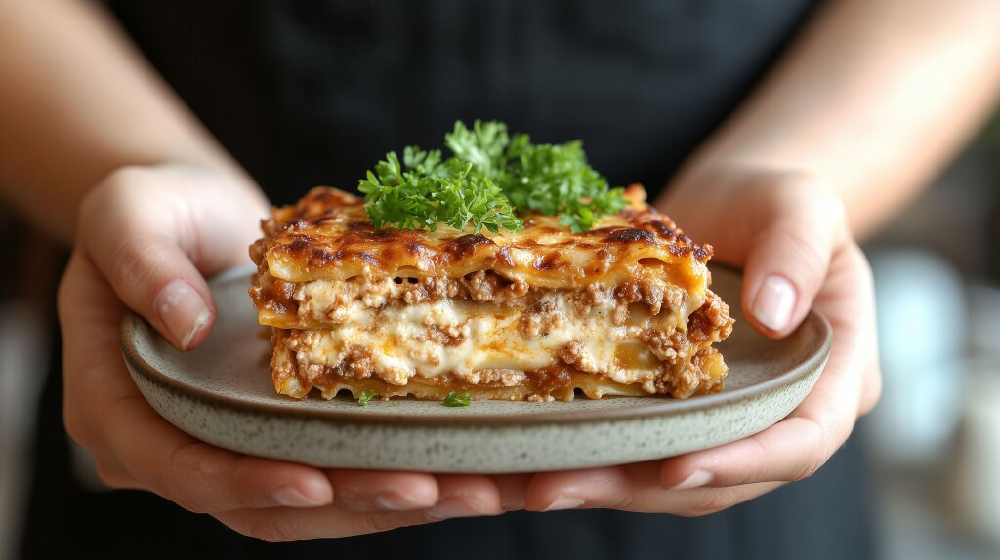

Lasagna Recipe

Description
What is there to say? It's a deadly mix of pork, beef, redwine, mozzarella, paremsan, pasta, and love - the unbeatable home cooked meal. recipe lifted from BBC Food here
Ingredients
For the ragù sauce
- 2 tbsp extra virgin olive oil
- 300g/10½oz beef mince
- 300g/10½oz pork mince
- 1 large glass red wine
- 1 small onion, finely chopped
- 2 carrots, finely chopped
- 1 stick celery, finely chopped
- salt and freshly ground black pepper
- 1 x 400g/14oz tin chopped plum tomatoes
For the white sauce
- 40g/1½oz butter
- 40g/1½oz plain flour
- 500ml/18fl oz milk
- salt and pepper
- 100g/3½oz grated parmesan cheese
To finish
- 8-10 sheets fresh egg lasagne
- 1 ball mozzarella
Steps
Do this:
- For the ragù sauce, in a large pan, heat the olive oil, add the mince and brown well. Add the red wine to deglaze the pan and cook until it has almost evaporated
- Tip in the onion, carrots and celery and fry for a couple of minutes. Season with salt and pepper, then add the chopped tomatoes and rinse the tin out with water and add the water from the tin to the pan. Lower the heat, cover with a lid and gently simmer for two hours, stirring from time to time.
- Preheat the oven to 200C/400F/Gas 6.
- For the white sauce, melt the butter in a small pan on a medium heat, stir in the flour with either a wooden spoon or small hand whisk (this will avoid lumps from forming) to form a paste and stir in a little of the milk.
- Add the remaining milk, stirring all the time until it begins to thicken to a creamy consistency. Remove from the heat, add salt and pepper and stir in 20g/¾oz of the grated parmesan cheese.
- Line an ovenproof rectangular dish of about 22 x 26cm/8½ x 10½in with a little of the ragù sauce, arrange sheets of lasagne over followed by ragù sauce, dots of mozzarella and white sauce and a sprinkling of grated parmesan. Continue to make layers like this until you have finished all the ingredients, ending with a topping of white sauce. Hold back some of the ragù to dot over the top and sprinkle with parmesan cheese.
- Cover with foil and bake for 35-40 minutes, or until golden-brown. Remove the foil for the last five minutes of cooking. Allow to rest for a couple of minutes before serving.
Home